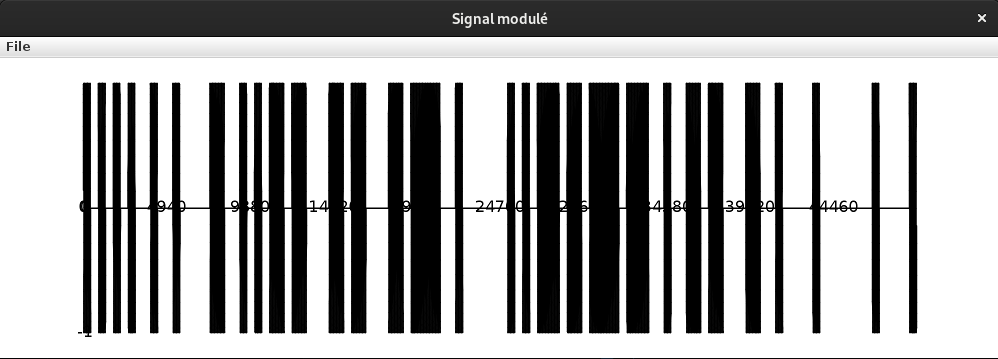

Durant le premier semestre, nous avons relevé le défi passionnant de concevoir un ensemble de deux programmes capables d'échanger des données numériques via un canal audio. Ce projet, nommé DosOok, nous a plongés au cœur de la transmission de données à travers un médium peu conventionnel mais prometteur : le son.
La transmission de données par le son n'est pas une idée nouvelle, mais elle suscite un regain d'intérêt en raison de ses propriétés uniques : Utilisation d'ondes sonores proches des ultrasons ou audibles pour coder les données, ne nécessitant pas de matériel spécialisé comme le WiFi, le Bluetooth ou le NFC. Possibilité d'échanger des données numériques entre n'importe quel appareil doté d'un haut-parleur et/ou d'un microphone. Transfert rapide de données sécurisées par cryptographie entre deux appareils, offrant une expérience utilisateur sans friction.
Un signal numérique est une suite de valeurs définies à des instants d'échantillonnage et représentées selon un format donné. Dans le cadre de l'audio, la fréquence d'échantillonnage est une composante cruciale, généralement de 44,1 kHz.
Transmettre des signaux audio tels quels n'est pas efficace sur de longues distances. C'est pourquoi nous utilisons des modulations telles que la modulation d'amplitude par sauts (ASK) dans le projet DosOok. Cette méthode implique de multiplier une onde porteuse par la traduction binaire des données à transmettre.
Pour faciliter la mise au point des programmes, nous utilisons une mémorisation intermédiaire des signaux audio sous forme de fichiers .wav. Les paramètres des fichiers .wav sont standardisés et offrent une certaine flexibilité, notamment une fréquence d'échantillonnage de 44,1 kHz et un format PCM entier.
DosSend : Programme émetteur responsable de la transmission des données. Il implémente la
modulation
d'amplitude par sauts (ASK) pour convertir les données en signaux audio.
DosRead : Programme récepteur chargé de décoder les signaux audio reçus et de les transformer en
données
exploitables.
Voici le signal modulé à partir du message suivant : 'Hello World !'
Le projet DosOok représente une exploration fascinante des possibilités offertes par la transmission de données par le son. En combinant théorie et pratique, nous avons développé une compréhension approfondie de cette technologie émergente et ouvert de nouvelles perspectives quant à ses applications potentielles.